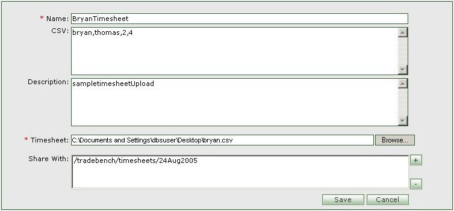
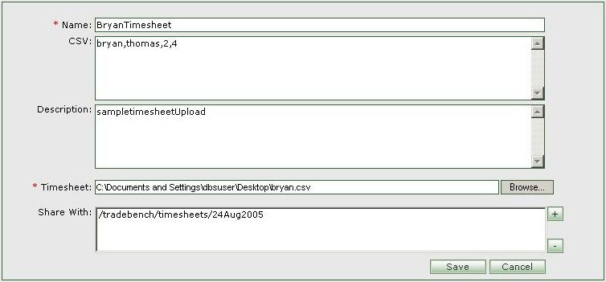

- First go to the folder/drawer where you would like to add a new timesheet.
- Click on the 'Create New Timesheet' icon [
 ].
].

| How to create add a new Timesheet ? |
|
 |
|
|
| General Create and Add Timesheet Information |
| Name | Min Length | Max Length | Description | Comments |
|---|---|---|---|---|
| Name | - | - | timesheet creator's name goes here. | Required |
| CSV | - | - | Allows entry of comma seperated values for this timesheet. | Optional. |
| Description | - | - | Allows setting description for this timesheet. | Optional, but facilitates retrieving timesheet based on description |
| Timesheet | - | - | Allows uploading the timesheet file submitted by the candidate. | Required, timesheet file can be a scanned pdf or a doc or a csv file. |
| Share With | - | - | Allows sharing the timesheet with multiple folders. | Optional,Press '+' to select a folder for share.Press '-' to remove a folder from share. |
| 'Save' button | - | - | Press 'Save' to save the timesheet. | Once saved , the timesheet will appear under the parent folder. |
| 'Cancel' button | - | - | Press 'Cancel' to abort creating new timesheet. | - |